Cuadernillos de trabajo
Esta sección ofrece varios ejemplos de los retos y soluciones explicadas en el documento principal. Se utilizan distintos tipos de modelos (lineales, basados en árboles y otros) y distintas implementaciones (R, keras, xgboost) para mostrar que estos problemas se presentan independientemente de la elección de herramientas particulares.
Los cuadernillos utilizan notación con punto decimal para mantener consistencia con los paquetes que así lo usan. Emplea el lenguaje de programación R y los siguientes paquetes: Wickham (2017), Max Kuhn and Wickham (2020), Hvitfeldt (2020), Max Kuhn, Chow, and Wickham (2020), Max Kuhn and Vaughan (2020a), Max Kuhn and Vaughan (2020b), Vaughan (2020), Max Kuhn (2020), Xie (2019), Pedersen (2019).
Todo el material es reproducible según instrucciones en este repositorio, el cual contiene un archivo Dockerfile que describe las dependencias de infraestructura para su replicación.
Recolección y procesamiento de datos
Mala correspondencia entre variables disponibles y variables ideales
Usar modelos que predicen la métrica incorrecta puede llevar a tomar decisiones erradas. A veces el problema es claro, cuando la métrica sustituto tiene deficiencias obvias; en otras, puede ser más sutil.
En el ejemplo que aparece a continuación se busca predecir la demanda de cierto producto (pensemos en vacunas o alguna medicina) para poder tomar decisiones de abastecimiento.
Se cuenta con datos históricos de inventario (80 semanas), ventas y una
variable asociada a ventas (en el caso de las vacunas podría ser temperatura)
y otra de agotamiento del inventario. Separamos los datos en entrenamiento y prueba,
ajustando el modelo con el subconjunto de datos de entrenamiento. En este caso se
utiliza un modelo lineal con variable dependiente ventas y covariables de semana y la
covariable
entrena <- ventas %>% filter(semana < 60)
prueba <- ventas %>% filter(semana >= 60, semana <= 80)
entrena %>% select(-demanda) %>% head() %>% kable()| semana | inventario | ventas | predictor | agotamiento |
|---|---|---|---|---|
| 1 | 153 | 110 | -27.7014124 | 0 |
| 2 | 170 | 148 | 0.7664636 | 0 |
| 3 | 158 | 130 | -15.2606032 | 0 |
| 4 | 162 | 142 | 4.2461227 | 0 |
| 5 | 159 | 159 | 28.5107593 | 1 |
| 6 | 162 | 162 | 14.8895964 | 1 |
mod_lineal <- lm(ventas ~ semana + predictor, data = ventas)
mod_lineal##
## Call:
## lm(formula = ventas ~ semana + predictor, data = ventas)
##
## Coefficients:
## (Intercept) semana predictor
## 140.9935 0.8166 0.5535Evaluamos el error de predicción.
preds <- predict(mod_lineal, newdata = prueba)
round(mean(abs(preds - prueba$ventas))/mean(prueba$ventas), 3)## [1] 0.04El error porcentual es bajo. Los datos ajustados y predicciones se ven como sigue:
preds <- predict(mod_lineal, newdata = ventas)
ventas_larga <- ventas %>% mutate(pred = preds) %>%
pivot_longer(cols = all_of(c("ventas","pred")), names_to = "tipo", values_to = "unidades")
ggplot(ventas_larga %>% mutate(unidades = ifelse(tipo=="ventas" & semana > 80, NA, unidades)),
aes(x = semana, y = unidades, group = tipo, colour = tipo)) +
geom_line() +
geom_vline(xintercept = 80) +
geom_vline(xintercept = 60) +
annotate("text", x = 25, y=105, label = "entrena") +
annotate("text", x = 69, y=105, label = "prueba")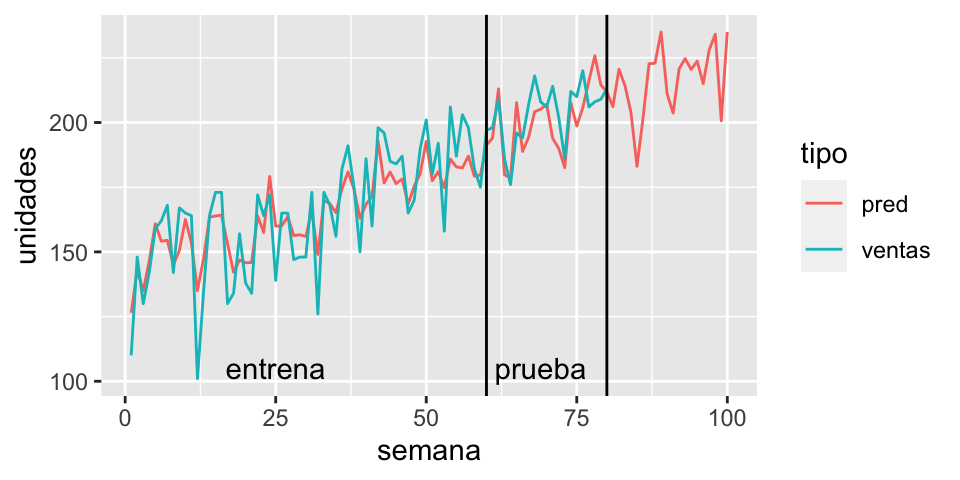
Sin embargo, tomar decisiones de demanda o inventario es equivocado. La razón es que existe una diferencia entre la variable ideal (demanda real de medicinas) y la variable observada (venta de medicinas). La diferencia radica en que existen agotamientos de inventario, es decir, periodos en los que aunque existía demanda, no había suficiente inventario para todos los compradores. Esto se ve marcado con rojo en la siguiente gráfica.
preds <- predict(mod_lineal, newdata = ventas)
ventas_larga <- ventas %>% mutate(pred = preds) %>%
pivot_longer(cols = all_of(c("ventas","pred")), names_to = "tipo", values_to = "unidades")
ggplot(ventas_larga %>% mutate(unidades = ifelse(tipo=="ventas" & semana > 80, NA, unidades)), aes(x = semana)) +
geom_line(aes(group = tipo, colour = tipo, y = unidades)) +
geom_point(data = filter(ventas, agotamiento==1, semana < 80), aes(y = ventas), colour = "red") +
geom_vline(xintercept = 80) +
geom_vline(xintercept = 60) +
annotate("text", x = 25, y=105, label = "entrena") +
annotate("text", x = 69, y=105, label = "prueba")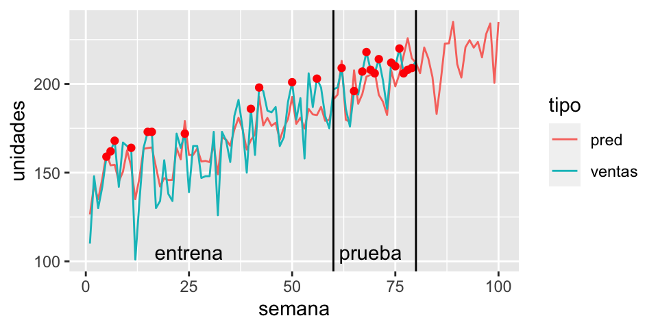
Si usáramos la política sugerida por las predicciones (por ejemplo, 5 % más), veríamos las ventas de la primera gráfica a continuación. Sin embargo, si utilizáramos una política de inventario con 280 unidades, observaríamos:
preds <- predict(mod_lineal, newdata = ventas)
ventas_obs <- ventas %>% mutate(pred = preds) %>%
mutate(inventario = 1.05 * pred) %>%
mutate(ventas = ifelse(semana > 80, pmin(inventario, demanda), ventas))
ventas_larga <- ventas_obs %>%
pivot_longer(cols = all_of(c("ventas","pred")), names_to = "tipo", values_to = "unidades")
g1 <- ggplot(ventas_larga, aes(x = semana)) +
geom_line(aes(group = tipo, colour = tipo, y = unidades)) +
geom_point(data = filter(ventas_obs, ventas == inventario, semana > 80), aes(y = ventas), colour = "red") +
geom_vline(xintercept = 80) + labs(subtitle = "Inventario: Predicciones + 5%")preds <- predict(mod_lineal, newdata = ventas)
ventas_obs <- ventas %>% mutate(pred = preds) %>%
mutate(inventario = 280) %>%
mutate(ventas = ifelse(semana > 80, pmin(inventario, demanda), ventas))
ventas_larga <- ventas_obs %>%
pivot_longer(cols = all_of(c("ventas","pred")), names_to = "tipo", values_to = "unidades")
g2 <- ggplot(ventas_larga, aes(x = semana)) +
geom_line(aes(group = tipo, colour = tipo, y = unidades)) +
geom_point(data = filter(ventas_obs, ventas == inventario, semana > 80), aes(y = ventas), colour = "red") +
geom_vline(xintercept = 80)+ labs(subtitle = "Inventario: 300 unidades cte")g1 / g2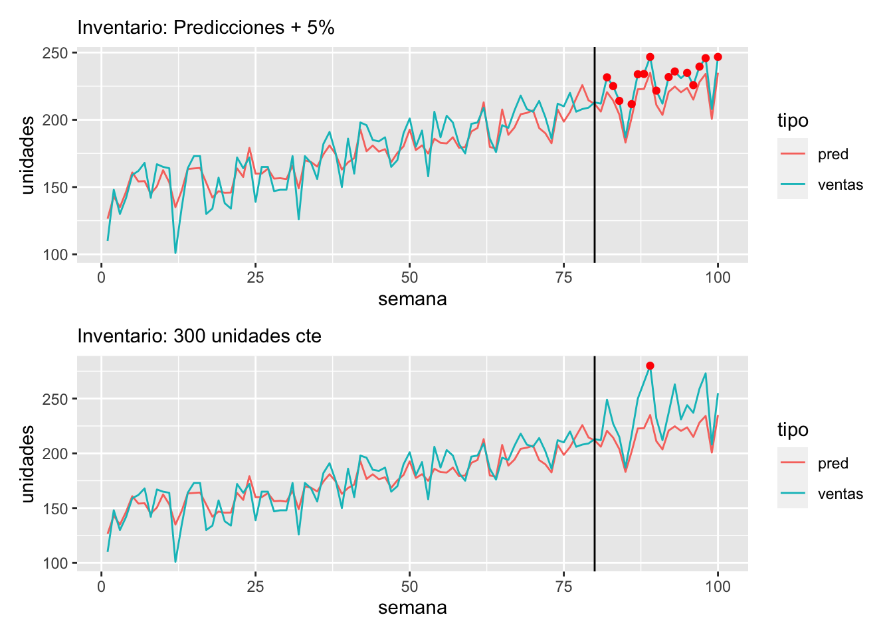
Entonces,
La política basada en las predicciones exacerba el problema de los agotamientos.
Un uso no pensado de datos, sin considerar el proceso generador de los mismos, puede producir errores grandes en las decisiones.
En este caso, la confusión proviene de no separar los conceptos de demanda y ventas. Otros indicadores de demanda o modelos más adecuados ayudarían a resolver el problema.
Soluciones simplistas, como solo tomar los datos donde no ocurren agotamientos, pueden empeorar aún más la situación: incrementan el sesgo (seleccionamos semanas donde las ventas tienden a ser bajas) y reducen la precisión.
Muestras probabilísticas y naturales
Cuando las muestras de entrenamiento son diferentes a las poblaciones donde van a aplicarse los modelos, existen dificultades en validar correctamente las predicciones.
Para este ejemplo se utilizarán datos de la encuesta nacional de ingresos y gastos en hogares de México (INEGI 2014), para simular el escenario que queremos ejemplificar
set.seed(128)
encuesta_ingreso <- read_csv("datos/enigh-ejemplo.csv")
datos_ingreso <- encuesta_ingreso %>%
mutate(num_focos = FOCOS) %>%
mutate(ingreso_miles = (INGCOR / 1000)) %>%
mutate(tel_celular = ifelse(SERV_2 == 1, "Sí", "No")) %>%
mutate(piso_firme = ifelse(PISOS != 1 | is.na(PISOS), "Sí", "No")) %>%
mutate(lavadora = ifelse(LAVAD != 1 | is.na(LAVAD), "Sí", "No")) %>%
mutate(automovil = VEHI1_N > 0) %>%
mutate(marginacion = fct_reorder(marginación, ingreso_miles, median)) %>%
rename(ocupadas = PEROCU) %>%
rename(educacion_jef = NIVELAPROB) %>%
select(ingreso_miles, num_focos, tel_celular,
marginacion, ocupadas, piso_firme, lavadora, automovil, educacion_jef)ingreso_split <- initial_split(datos_ingreso, prop = 0.7)
entrena <- training(ingreso_split)
prueba <- testing(ingreso_split)Supóngase que interesa estimar el ingreso de los hogares. Para ello se usa una encuesta por teléfono celular; más aún, supóngase que solo se accede a zonas que no tienen marginación muy alta.
muestra_sesgada <- filter(entrena,
tel_celular == "Sí",
marginacion=="Muy bajo")
sesgados_split <- initial_split(muestra_sesgada)
entrena_sesgo <- training(sesgados_split)
validacion_sesgo <- testing(sesgados_split)Se construye un modelo lineal para el logaritmo de ingresos con los datos disponibles.
library(splines)
formula <- as.formula("log(ingreso_miles) ~ ns(num_focos, 3) +
ns(ocupadas, 3) + lavadora + automovil + piso_firme +
ns(educacion_jef, 3)")
mod_sesgo <- lm(formula, data = entrena_sesgo)
# tomamos una muestra representativa para comparar, del mismo tamaño que la sesgada
mod_representativa <- lm(formula, data = sample_n(entrena, nrow(entrena_sesgo)))Y se evalúa el error en una muestra de prueba construida con datos con las mismas características sesgadas que los datos de entrenamiento (hogares con teléfono celular y grado de marginación muy bajo).
preds_val <- predict(mod_sesgo, newdata = validacion_sesgo)
mean(abs(preds_val - log(1 + validacion_sesgo$ingreso_miles))) %>% round(2)## [1] 0.45El error en una muestra más similar a la población donde se pretende aplicar el algoritmo es mayor:
preds_prueba_sesgo <- predict(mod_sesgo, newdata = prueba)
preds_prueba <- predict(mod_representativa, newdata = prueba)
prueba$pred_sesgada <- preds_prueba_sesgo
prueba$pred_rep <- preds_prueba
mean(abs(preds_prueba_sesgo - log(1 + prueba$ingreso_miles))) %>% round(2)## [1] 0.43Sin embargo, el principal problema se refleja en la siguiente gráfica, donde se usan escalas logarítmicas para hacer comparaciones multiplicativas, que interesan por la naturaleza del ingreso. Cada punto representa un hogar. La muestra es más similar a la población donde se aplicará la metodología. En el eje horizontal se grafica la predicción de los hogares, utilizando el modelo, mientras que el eje vertical corresponde al ingreso de cada hogar. Como referencia se agrega la recta y = x, y un suavizador. El foco es en el desempeño para los hogares de ingresos relativamente bajos (menos de 10.000 MXN al mes):
breaks_y <- c(3, 5, 10, 20, 40, 80)
g_sesgo <- ggplot(prueba %>% filter(pred_sesgada < log(30)),
aes(x = exp(pred_sesgada), y = ingreso_miles)) +
geom_point(alpha = 0.5) +
geom_abline() + geom_smooth(method = "loess", span = 1) +
scale_x_log10(limits=c(5, 30)) + scale_y_log10(breaks = breaks_y) +
xlab("Predicción (miles al trimestre)") +
ylab("Ingreso corriente (miles al trimestre)") +
labs(subtitle = "Desempeño en prueba \ncon sesgo en entrenamiento")
g_representativa <- ggplot(prueba %>% filter(pred_sesgada < log(30)),
aes(x = exp(pred_rep), y = ingreso_miles)) +
geom_point(alpha = 0.5) +
geom_abline() + geom_smooth(method = "loess", span = 1) +
scale_x_log10(limits = c(5, 30)) + scale_y_log10(breaks = breaks_y) +
xlab("Predicción (miles al trimestre)") +
ylab("Ingreso corriente (miles al trimestre)") +
labs(subtitle = "Desempeño en prueba \ncon muestra representativa en entrenamiento")
g_sesgo + g_representativa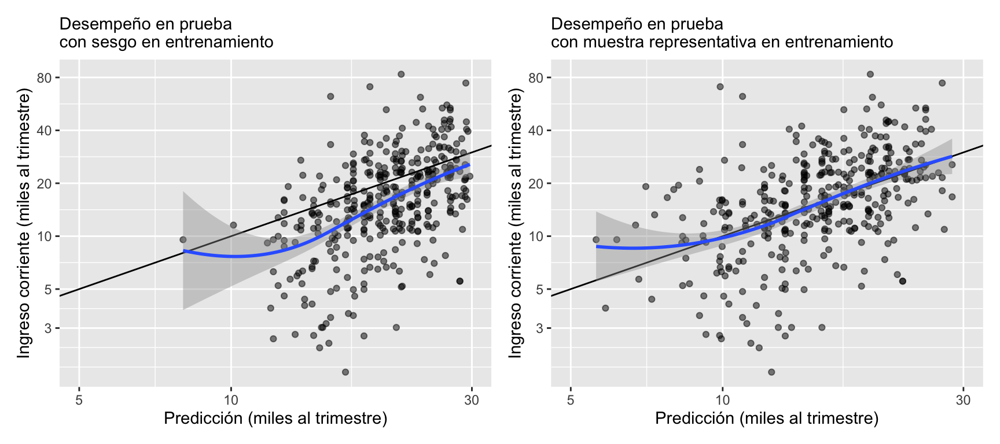
Aunque comúnmente se espera sobrepredecir valores observados relativamente bajos, y lo contrario para valores relativamente altos, para quienes tienen ingresos de menos de 10.000 MXN mensuales el modelo sesgado sobrepredice el ingreso verdadero alrededor de 40 %:
prueba_bajo <- prueba %>% filter(ingreso_miles < 3*10)
sesgo <- mean(exp(prueba_bajo$pred_sesgada))/mean(prueba_bajo$ingreso_miles) - 1
round(sesgo,3)## [1] 0.424Al compararse con el mismo modelo entrenado con una muestra representativa, donde el efecto es considerablemente menor:
prueba_bajo <- prueba %>% filter(ingreso_miles < 3*10)
sesgo <- mean(exp(prueba_bajo$pred_rep))/mean(prueba_bajo$ingreso_miles) - 1
round(sesgo,3)## [1] 0.136Se tienen entonces dos problemas:
El sesgo produce un error considerablemente más grande en la implementación que en la validación.
Peor aún, el sesgo es mayor para hogares de menores ingresos (las predicciones son altas), lo cual puede producir una focalización mediocre si buscamos identificar hogares de menores ingresos.
Muestras naturales: comparaciones causales
Este ejemplo está tomado de (Hastie, Tibshirani, and Friedman 2017) y (Rossouw et al. 1983). Se consideran los siguientes datos, donde el objetivo es predecir enfermedad del corazón (chd)12:
sa_heart <- read_csv("datos/sa-heart.csv")
sa_heart <- sa_heart %>%
rename(presion_arterial = sbp, tabaco = tobacco, colesterol_ldl = ldl,
adiposidad = adiposity, historia_fam = famhist, tipo_a = typea, obesidad = obesity,
edad = age, enf_coronaria = chd)
sa_heart## # A tibble: 462 × 10
## presion…¹ tabaco coles…² adipo…³ histo…⁴ tipo_a obesi…⁵ alcohol edad enf_c…⁶
## <dbl> <dbl> <dbl> <dbl> <chr> <dbl> <dbl> <dbl> <dbl> <dbl>
## 1 160 12 5.73 23.1 Present 49 25.3 97.2 52 1
## 2 144 0.01 4.41 28.6 Absent 55 28.9 2.06 63 1
## 3 118 0.08 3.48 32.3 Present 52 29.1 3.81 46 0
## 4 170 7.5 6.41 38.0 Present 51 32.0 24.3 58 1
## 5 134 13.6 3.5 27.8 Present 60 26.0 57.3 49 1
## 6 132 6.2 6.47 36.2 Present 62 30.8 14.1 45 0
## 7 142 4.05 3.38 16.2 Absent 59 20.8 2.62 38 0
## 8 114 4.08 4.59 14.6 Present 62 23.1 6.72 58 1
## 9 114 0 3.83 19.4 Present 49 24.9 2.49 29 0
## 10 132 0 5.8 31.0 Present 69 30.1 0 53 1
## # … with 452 more rows, and abbreviated variable names ¹presion_arterial,
## # ²colesterol_ldl, ³adiposidad, ⁴historia_fam, ⁵obesidad, ⁶enf_coronaria
## # ℹ Use `print(n = ...)` to see more rowslibrary(recipes)
set.seed(125)
sa_split <- rsample::initial_split(sa_heart, prop = 0.75)
sa_split## <Training/Testing/Total>
## <346/116/462>receta_sa <- training(sa_split) %>%
recipe(enf_coronaria ~ .) %>%
step_dummy(historia_fam) %>%
step_mutate(enf_coronaria = factor(enf_coronaria)) %>%
prep()sa_entrena <- receta_sa %>% juice
sa_boosted <- boost_tree(trees = 3000, mode = "classification",
learn_rate = 0.001, tree_depth = 2,
sample_size = 0.5) %>%
set_engine("xgboost") %>%
fit(enf_coronaria ~ ., data = sa_entrena)Se puede evaluar este modelo y afinar parámetros también. Aquí interesa interpretar el efecto de las variables en este modelo. Para eso se considera la gráfica de dependencia parcial de la prevalencia de enfermedad de corazón y la variable obesidad:
library(pdp)
pdp_ob <- pdp::partial(sa_boosted$fit, pred.var = "presion_arterial",
plot = TRUE, plot.engine = "ggplot2", prob = TRUE,
train = sa_entrena %>% dplyr::select(-enf_coronaria))
pdp_ob + xlab("Presión arterial sistólica") + ylab("Predicción promedio")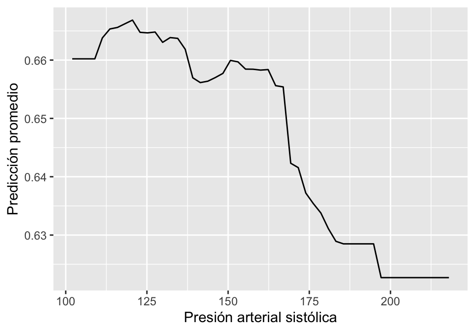
La interpretación correcta de este gráfica de dependencia parcial (Hastie, Tibshirani, and Friedman 2017) depende del hecho de que este es un estudio retrospectivo, donde algunos pacientes con riesgo de enfermedad de corazón tuvieron intervenciones para reducir su riesgo, entre los que está tomar medicinas para reducir la presión. Una interpretación causal de reducciones de la presión arterial como promotora de enfermedades del corazón es incorrecta y potencialmente peligrosa.
Desarrollo de modelo y validación
Contaminación entrenamiento-validación
Se presentan a continuación varios ejemplos de cómo las fugas de entrenamiento a validación producen estimaciones sesgadas del desempeño de predictores.
Selección de variables antes de dividir los datos
Cualquier paso de preprocesamiento debe hacerse sin usar datos de validación. Esto incluye cuando se usan métodos como validación cruzada.
Este ejemplo es originalmente de (Hastie, Tibshirani, and Friedman 2017). Se utilizarán datos sintéticos, generados con el siguiente proceso:
Simulando variables respuesta y con distribución binomial,
Simulando 1000 covariables independientes, cada una con distribución normal estándar
simular <- function(n = 100, p = 500, prob = 0.5){
datos <- map(set_names(1:p, paste0("V", 1:p)), ~ rnorm(n)) %>%
bind_cols()
datos$y <- rbinom(n, 1, prob)
datos
}
set.seed(8234)
datos_entrena <- simular(n = 200, p = 1000)
datos_prueba <- simular(n = 2000, p = 1000)
dim(datos_entrena)## [1] 200 1001datos_entrena %>% group_by(y) %>% tally() %>% kable()| y | n |
|---|---|
| 0 | 113 |
| 1 | 87 |
La selección de variables está dada por la siguiente función. Esta función selecciona las variables más correlacionadas con la variable objetivo:
seleccionar <- function(datos, num_var = 10){
correlaciones <- datos %>%
pivot_longer(cols = -y, names_to = "variable", values_to = "x") %>%
group_by(variable) %>%
summarise(corr = abs(cor(y, x))) %>%
arrange(desc(corr))
# seleccionar
seleccionadas <- correlaciones %>%
top_n(num_var, wt = corr) %>%
pull(variable)
datos %>% select(one_of(c("y", seleccionadas)))
}Método erróneo
Aquí se ven las 10 variables que fueron seleccionadas. Por sí solo este método no es incorrecto, pero cuando se ejecuta sobre los datos que se usarán en validación (validación cruzada), entonces la estimación de desempeño es optimista:
datos_filtrados <- seleccionar(datos_entrena)
datos_filtrados %>% head %>%
mutate_if(is.numeric, round, 3) %>% kable()| y | V337 | V464 | V984 | V461 | V525 | V732 | V39 | V774 | V491 | V682 |
|---|---|---|---|---|---|---|---|---|---|---|
| 0 | 1.592 | -0.587 | 1.763 | -0.847 | 0.452 | -0.604 | -0.400 | -1.146 | -0.938 | 0.136 |
| 0 | 1.782 | 0.604 | 0.739 | -0.533 | 1.752 | 0.945 | 1.142 | -0.638 | -0.342 | -1.308 |
| 0 | 1.528 | 0.635 | -0.326 | 0.734 | -0.207 | -0.974 | 1.574 | 2.401 | 0.428 | 0.176 |
| 0 | 0.799 | -1.436 | 0.724 | 0.366 | 1.680 | 0.476 | 0.376 | -1.673 | -0.683 | 0.161 |
| 0 | 0.759 | -0.208 | -0.373 | 0.208 | -1.009 | -0.028 | -1.209 | 0.759 | 2.038 | 1.402 |
| 1 | -0.377 | -1.044 | 1.358 | -0.223 | 0.469 | 1.221 | 0.582 | 0.378 | -0.116 | 0.173 |
Para cualquier corte de validación que se haga (ya sea que se separa un conjunto de datos o se hace validación cruzada), el porcentaje de aciertos parece ser mayor a 0.5:
corte_validacion <- datos_filtrados %>% sample_frac(0.7)
valida <- anti_join(datos_filtrados, corte_validacion)
modelo_1 <- glm(y ~ ., corte_validacion, family = "binomial")
mean(as.numeric(predict(modelo_1, valida) > 0) == valida$y) %>% round(2)## [1] 0.73Sin embargo, el desempeño real del modelo será:
mean(as.numeric(predict(modelo_1, datos_prueba) > 0) == datos_prueba$y) %>% round(2)## [1] 0.49Método correcto
La selección de variables debe hacerse en cada vuelta de validación cruzada:
corte_validacion <- datos_entrena %>% sample_frac(0.7)
datos_filtrados_corte <- seleccionar(corte_validacion)
valida <- anti_join(datos_entrena, corte_validacion)
modelo_1 <- glm(y ~ ., datos_filtrados_corte, family = "binomial")
mean(as.numeric(predict(modelo_1, valida) > 0) == valida$y) %>% round(2)## [1] 0.52Sobremuestrear antes de particionar
Una de las formas para resolver problemas de desbalance de clases es la técnica de sobremuestreo. Sin embargo, se tiene que ser muy cuidadoso para evitar errores de fuga de información al aplicar estas técnicas.
En este ejemplo se verá que sobremuestrear una clase reducida antes de separar datos de validación o hacer validación cruzada puede producir estimaciones demasiado optimistas del error de predicción.
Supongamos que tenemos desbalance severo entre nuestras dos clases:
set.seed(99134)
datos_desbalance <- simular(n = 500, p = 20, prob = 0.1) %>%
mutate(y = factor(y, levels = c(1, 0)))
datos_desbalance %>% group_by(y) %>% tally() %>% kable()| y | n |
|---|---|
| 1 | 41 |
| 0 | 459 |
Manera incorrecta
Supóngase que primero se aplica (SMOTE)(Chawla et al. 2002) para intentar balancear los datos:
receta_balance <- recipe(y ~ ., datos_desbalance) %>%
step_smote(y) %>%
prep()
datos_smote <- juice(receta_balance) Obteniendo así,
datos_smote %>% group_by(y) %>% tally() %>% kable()| y | n |
|---|---|
| 1 | 459 |
| 0 | 459 |
Ahora se separa entrenamiento y validación
sep_datos_smote <- initial_split(datos_smote)
entrena_smote <- training(sep_datos_smote)
prueba_smote <- testing(sep_datos_smote)Y se genera un método de clasificación usando un bosque aleatorio de árboles de decisión:
metricas <- metric_set(accuracy, recall, precision)
bosque <- rand_forest(trees = 500, mtry = 20, mode = "classification") %>%
set_engine("ranger") %>%
fit(y ~ ., data = entrena_smote)
bosque %>%
predict(prueba_smote) %>%
bind_cols(prueba_smote) %>%
metricas(truth = y, estimate = .pred_class) %>%
mutate_if(is.numeric, round, 3) %>% kable| .metric | .estimator | .estimate |
|---|---|---|
| accuracy | binary | 0.948 |
| recall | binary | 0.991 |
| precision | binary | 0.909 |
En primera instancia parece ser que el desempeño es muy bueno. Se sabe que esto es ficticio, pues no hay relación de \(y\) con el resto de las covariables.
Manera correcta
Antes de hacer el rebalanceo de clases se separan entrenamiento y validación. Si se quiere, esta parte puede hacerse usando muestreo estratificado, por ejemplo, pero aquí se con - struye con muestreo aleatorio simple:
sep_datos <- initial_split(datos_desbalance, prop = 0.5)
entrena <- training(sep_datos)
prueba <- testing(sep_datos)receta_balance <- recipe(y ~ ., data = entrena) %>%
step_smote(y) %>%
prep()
entrena_balanceado <- juice(receta_balance)bosque_1 <- rand_forest(trees = 500, mtry = 20, mode = "classification") %>%
set_engine("ranger") %>%
fit(y ~ ., data = entrena_balanceado)
bosque_1 %>%
predict(prueba) %>%
bind_cols(prueba) %>%
metricas(truth = y, estimate=.pred_class) %>%
mutate_if(is.numeric, round, 3) %>%
kable()| .metric | .estimator | .estimate |
|---|---|---|
| accuracy | binary | 0.816 |
| recall | binary | 0.143 |
| precision | binary | 0.097 |
Aunque el accuracy parece alto, la precisión y la sensibilidad son cero. Un clasificador trivial que siempre predice la clase dominante puede tener mejor exactitud que el que hemos construido.
Variables no disponibles en el momento de predicción
En este caso mostramos un ejemplo donde se utiliza erróneamente una variable que no estará disponible en el momento de hacer las predicciones (datos de (Greene 2003)).
credito <- read_csv("datos/AER_credit_card_data.csv") %>%
rename(gasto = expenditure, dependientes = dependents, ingreso = income,
edad = age, propietario = owner) %>%
mutate(propietario = fct_recode(propietario, c(si = "yes")))
credito %>% head %>%
mutate_if(is.numeric, round, 1) %>% kable()| card | reports | edad | ingreso | share | gasto | propietario | selfemp | dependientes | months | majorcards | active |
|---|---|---|---|---|---|---|---|---|---|---|---|
| yes | 0 | 37.7 | 4.5 | 0.0 | 125.0 | si | no | 3 | 54 | 1 | 12 |
| yes | 0 | 33.2 | 2.4 | 0.0 | 9.9 | no | no | 3 | 34 | 1 | 13 |
| yes | 0 | 33.7 | 4.5 | 0.0 | 15.0 | si | no | 4 | 58 | 1 | 5 |
| yes | 0 | 30.5 | 2.5 | 0.1 | 137.9 | no | no | 0 | 25 | 1 | 7 |
| yes | 0 | 32.2 | 9.8 | 0.1 | 546.5 | si | no | 2 | 64 | 1 | 5 |
| yes | 0 | 23.2 | 2.5 | 0.0 | 92.0 | no | no | 0 | 54 | 1 | 1 |
Se quiere construir un modelo para predecir qué solicitudes fueron aceptadas y automatizar el proceso de selección. Se usa una regresión logística con Keras y penalización L2:
set.seed(823)
credito_split <- initial_split(credito)
entrena <- training(credito_split)
prueba <- testing(credito_split)# preparacion de datos
credito_receta <- recipe(card ~ ., credito) %>%
step_normalize(all_numeric()) %>%
step_dummy(all_nominal(), -card)
# modelo
modelo_regularizado <-
logistic_reg(penalty = 1) %>%
# set_engine("keras", epochs = 500, verbose = FALSE) %>%
set_mode("classification") # ajustar parametros de preprocesamiento
receta_prep <- credito_receta %>% prep(entrena)
# preprocesar datos
entrena_prep <- bake(receta_prep, entrena)
prueba_prep <- bake(receta_prep, prueba)
# ajustar modelo
ajuste <- modelo_regularizado %>%
fit(card~ gasto + dependientes + ingreso + edad + propietario_si, data = entrena_prep)# evaluar
metricas <- metric_set(accuracy, recall, precision)
ajuste %>% predict(prueba_prep) %>%
bind_cols(prueba) %>%
metricas(truth = factor(card), estimate = .pred_class) %>%
mutate_if(is.numeric, round, 3) %>%
kable()| .metric | .estimator | .estimate |
|---|---|---|
| accuracy | binary | 0.979 |
| recall | binary | 1.000 |
| precision | binary | 0.914 |
Y parece tener un desempeño razonable. Si quitamos la variable gasto (“expenditure”) se degrada totalmente el desempeño del modelo
ajuste_2 <- modelo_regularizado %>%
fit(card~ dependientes + ingreso + edad + propietario_si, data = entrena_prep)
ajuste_2 %>% predict(prueba_prep) %>%
bind_cols(prueba) %>%
metricas(truth = factor(card), estimate = .pred_class) %>%
mutate_if(is.numeric, round, 3) %>%
kable()| .metric | .estimator | .estimate |
|---|---|---|
| accuracy | binary | 0.779 |
| recall | binary | 0.041 |
| precision | binary | 0.600 |
La sensibilidad es muy mala y la precisión no puede calcularse, pues el modelo no hace predicciones positivas para el conjunto de prueba.
La razón de esta degradación en el desempeño es que gasto se refiere a uso de tarjetas de crédito. Esto incluye la tarjeta para la que se quiere hacer predicción de aceptación:
entrena %>%
mutate(algun_gasto = gasto > 0) %>%
group_by(algun_gasto, card) %>%
tally() %>%
kable()| algun_gasto | card | n |
|---|---|---|
| FALSE | no | 222 |
| FALSE | yes | 14 |
| TRUE | yes | 753 |
Lo que indica que algún gasto probablemente incluye el gasto en la tarjeta actual. La variable gasto es medida posteriormente a la entrega de la tarjeta: * El desempeño de este modelo para nuevas aplicaciones será muy malo, pues la variable gasto, en el momento de la aplicación, evidentemente no cuenta cuánto va a gastar cada cliente en el futuro.
Puntos de corte arbitrarios
Las mejores decisiones de punto de corte pueden hacerse con análisis de costo beneficio, con curvas tipo lift, como las del ejemplo anterior, basadas en ganancias y pérdidas de cada decisión. Aunque esta información muchas veces no está disponible, es la situación ideal para evaluar cómo ayuda el modelo y cuánto valen las acciones que pretendemos tomar. Es posible hacer este análisis con valores inciertos de costo beneficio.
Supóngase que estamos pensando en un tratamiento para retener estudiantes en algún programa de entrenamiento o mejora.
El tratamiento de retención cuesta 5000 MXN por alumno.
Se estima mediante experimentos o algún análisis externo que el tratamiento reduce la probabilidad de abandono en 60 %.
Se tiene algún tipo de valuación del valor social de que un alumno persista en el programa.
Se puede evaluar el modelo en el contexto del problema en la siguiente forma:
Suponiendo que se tratará un porcentaje de los estudiantes con mayor probabilidad de rotar.
Se calcula el costo esperado si se trata a un porcentaje de los estudiantes: se simula, reduciendo su probabilidad de abandono por el tratamiento y se suman los costos de tratarlos.
Se compara contra el escenario de no aplicar ningún tratamiento.
No es necesario usar medidas muy técnicas para dar un resumen de cómo puede ayudar el tratamiento y modelo para mantener el valor de la cartera:
ggplot(filter(perdidas_sim, tipo=="Tratamiento modelo"),
aes(x = factor(corte), y = - perdida / 1e6)) +
geom_boxplot() + ylab("Ganancia incremental (millones)") +
xlab("Corte inferior de tratamiento (probabilidad)") +
labs(subtitle = "Ganancia vs ninguna acción") + theme_minimal()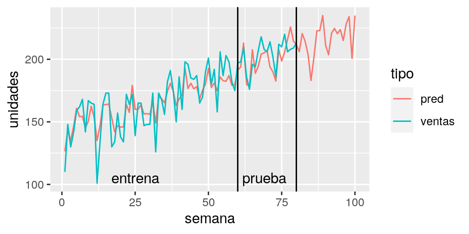
Se puede escoger un punto de corte entre 0.2 y 0.3, por ejemplo, o hacer más simulaciones para refinar la elección.
Si quiere separarse el efecto del tratamiento y el efecto del tratamiento aplicado según el modelo, puede compararse con la acción que consiste en tratar a los estudiantes al azar:
ggplot(perdidas_sim, aes(x = factor(corte), y = - perdida / 1e6,
group = interaction(tipo, corte), colour = tipo)) +
geom_boxplot() + ylab("Ganancia incremental (millones)") +
xlab("Corte inferior de tratamiento (probabilidad)") +
labs(subtitle = "Ganancia vs ninguna acción") + theme_minimal()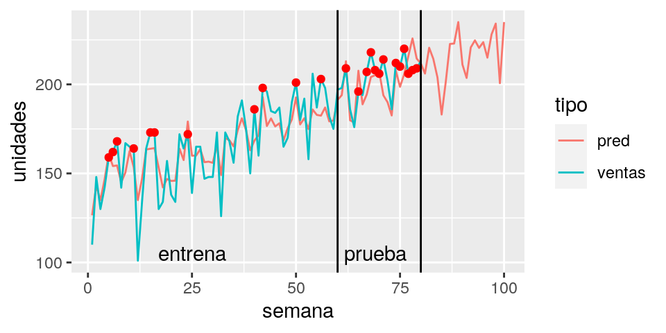
- La conclusión es que el modelo ayuda considerablemente a la focalización del programa (el área entre las dos curvas mostradas arriba).
Desbalance de clases
Cuando se tiene un desbalance severo de clases podemos enfrentar dos problemas: uno, existen en términos absolutos muy pocos elementos de una clase para poder discriminarla de manera efectiva (aún cuando se tengan los atributos o features correctos), y, dos, métodos usuales de evaluación de predicción son deficientes para evaluar el desempeño de predicciones.
Considérense los siguientes datos:
- “Los datos contienen 5822 registros de clientes reales. Cada registro consta de 86 variables, que contienen datos sociodemográficos (variables 1-43) y de propiedad del producto (variables 44-86). Los datos sociodemográficos se derivan de los códigos postales. Todos los clientes que viven en zonas con el mismo código postal tienen los mismos atributos sociodemográficos. La variable 86 (compra) indica si el cliente adquirió una póliza de seguro de caravanas” (James et al. 2013)13
Se quiere predecir la variable purchase:
caravan <- read_csv("datos/caravan.csv") %>%
mutate(MOSTYPE = factor(MOSTYPE),
MOSHOOFD = factor(MOSHOOFD)) %>%
mutate(Compra = fct_recode(Purchase, si = "Yes", no = "No")) %>%
mutate(Compra = fct_rev(Compra)) %>%
select(-Purchase)
nrow(caravan)## [1] 5822caravan %>% count(Compra) %>%
mutate(pct = 100 * n / sum(n)) %>%
mutate(pct = round(pct, 2))## # A tibble: 2 × 3
## Compra n pct
## <fct> <int> <dbl>
## 1 si 348 5.98
## 2 no 5474 94.0Esta es la distribución natural de respuesta que se ve en los datos, y se tiene relativamente pocos datos en la categoría “Si”.
Se usará muestreo estratificado para obtener proporciones similares en conjuntos de entrenamiento y prueba:
set.seed(823)
caravan_split = initial_split(caravan, strata = Compra, prop = 0.9)
caravan_split## <Training/Testing/Total>
## <5239/583/5822>entrena <- training(caravan_split)
prueba <- testing(caravan_split)Y se usará regresión logística (lo mismo aplica para otros métodos que produzcan probabilidades de clase, como boosting, árboles aleatorios o redes neuronales):
library(tune)
# preparacion de datos
caravan_receta <- recipe(Compra ~ ., entrena) %>%
step_dummy(all_nominal(), -Compra)
caravan_receta_prep <- caravan_receta %>% prep
# modelo
modelo_log <-
logistic_reg() %>%
set_engine("glm") %>%
set_mode("classification") %>%
fit(Compra ~ ., data = caravan_receta_prep %>% juice)Análisis incorrecto
La matriz de confusión de los datos de entrenamiento es:
predictions_ent_glm <- modelo_log %>%
predict(new_data = juice(caravan_receta_prep)) %>%
bind_cols(juice(caravan_receta_prep) %>% select(Compra))
predictions_ent_glm %>%
conf_mat(Compra, .pred_class)## Truth
## Prediction si no
## si 5 7
## no 309 4918Y los de prueba:
prueba_procesado <- bake(caravan_receta_prep, prueba)
predictions_glm <- modelo_log %>%
predict(new_data = prueba_procesado) %>%
bind_cols(prueba_procesado %>% select(Compra))
predictions_glm %>%
conf_mat(Compra, .pred_class)## Truth
## Prediction si no
## si 1 2
## no 33 547Y se obtiene un desempeño pobre según esta matriz de confusión (prueba y entrenamiento). La sensibilidad es muy baja, aunque la especificidad (tasa de correctos negativos) sea alta. Una conclusión típica es que el modelo no tiene valor predictivo, o que es necesario sobre muestrear la clase de ocurrencia baja.
Análisis correcto
En lugar de empezar con sobre/sub muestreo, que modifica las proporciones naturales de las categorías en los datos, es posible trabajar con probabilidades en lugar de predicciones de clase con punto de corte de 0.5.
Por ejemplo, puede visualizarse con una curva ROC (o curva lift, precision-recall, o alguna otra similar que tome en cuenta probabilidades):
predictions_prob <- modelo_log %>%
predict(new_data = prueba_procesado, type = "prob") %>%
bind_cols(prueba_procesado %>% select(Compra)) %>%
select(.pred_si, Compra)
datos_roc <- roc_curve(predictions_prob, Compra, .pred_si)
autoplot(datos_roc) +
xlab("1 - especificidad") + ylab("sensibilidad")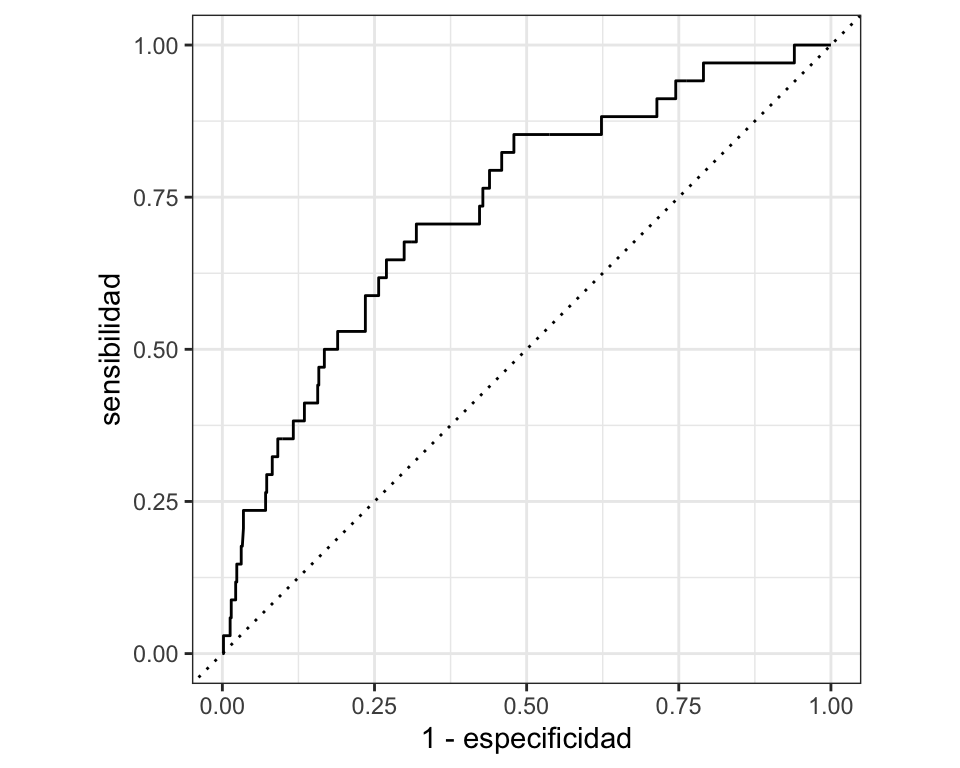
Donde se ve que es posible alcanzar buenos niveles de sensibilidad si se acepta alguna de- gradación en la especificidad, que originalmente es muy alta. Por ejemplo, cortando en 0.05 se puede obtener especificidad y sensibilidad que posiblemente sean adecuadas para el problema:
datos_roc %>% filter(abs(.threshold - 0.04) < 1e-4) %>% round(4)## # A tibble: 3 × 3
## .threshold specificity sensitivity
## <dbl> <dbl> <dbl>
## 1 0.0399 0.574 0.735
## 2 0.0399 0.576 0.735
## 3 0.0401 0.577 0.735¿Qué pasa si se hace sub/sobremuestreo?
Se sobremuestrea:
caravan_receta_smote <- recipe(Compra ~ ., entrena) %>%
step_dummy(MOSTYPE, MOSHOOFD) %>%
step_smote(Compra)
smote_prep <- prep(caravan_receta_smote)
# modelo
entrena_1 <- juice(smote_prep)
entrena_1 %>% count(Compra)## # A tibble: 2 × 2
## Compra n
## <fct> <int>
## 1 si 4925
## 2 no 4925modelo_log_smote <-
logistic_reg() %>%
set_engine("glm") %>%
set_mode("classification") %>%
fit(Compra ~ ., data = entrena_1)En entrenamiento la matriz de confusión es aparentemente mejor:
predictions_ent_glm <- modelo_log_smote %>%
predict(new_data = entrena_1) %>%
bind_cols(entrena_1 %>% select(Compra))
predictions_ent_glm %>%
conf_mat(Compra, .pred_class)## Truth
## Prediction si no
## si 3829 1348
## no 1096 3577Pero en prueba, los resultados son muy similares. Se agrega también el modelo construido submuestreando la clase dominante:
entrena_sub <- caravan_receta %>% step_downsample(Compra) %>% prep() %>% juice
modelo_log_sub <-
logistic_reg() %>%
set_engine("glm") %>%
set_mode("classification") %>%
fit(Compra ~ ., data = entrena_sub)predictions_prob <- modelo_log_smote %>%
predict(new_data = prueba_procesado, type = "prob") %>%
bind_cols(prueba_procesado %>% select(Compra)) %>%
select(.pred_si, Compra)
predictions_prob_sub <- modelo_log_sub %>%
predict(new_data = prueba_procesado, type = "prob") %>%
bind_cols(prueba_procesado %>% select(Compra)) %>%
select(.pred_si, Compra)
datos_roc_smote <- roc_curve(predictions_prob, Compra, .pred_si)
datos_roc_sub <- roc_curve(predictions_prob_sub, Compra, .pred_si)
datos_roc_comp <- bind_rows(datos_roc %>% mutate(tipo = "natural"),
datos_roc_smote %>% mutate(tipo = "con sobre muestreo"),
datos_roc_sub %>% mutate(tipo = "con sub muestreo")
)
ggplot(datos_roc_comp,
aes(x = 1 - specificity, y = sensitivity, colour = tipo)) +
geom_path() +
geom_abline(lty = 3) +
coord_equal() +
theme_bw()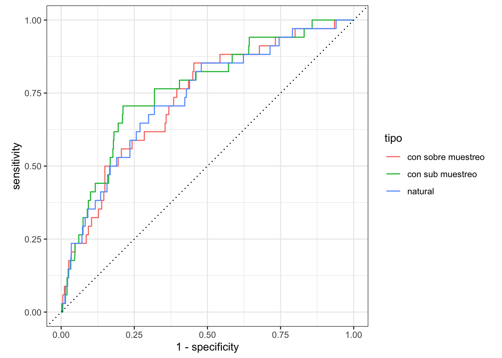
El problema original no era que el ajuste no funcionaba, sino que evaluamos el punto de corte incorrecto. Un punto de corte de 0.5 con SMOTE equivale a uno mucho más reducido sin SMOTE.
Peor aún, las probabilidades del modelo construido con sobremuestreo no reflejan las tasas de ocurrencia de la respuesta que nos interesa, lo cual puede producir resúmenes engañosos de las tasas de respuesta que esperamos observar en producción.
Equidad con atributos protegidos
El siguiente ejemplo es derivado de (Hardt, Price, and Srebro (2016)). Supóngase que se tiene un atributo protegido A que tiene dos valores: azul y naranja. Naranja es el grupo minoritario desaventajado. Se usan datos simulados como sigue: el atributo score está asociado al atributo protegido.
inv_logit <- function(x){
1 / (1 + exp(-x))
}
simular_datos <- function(n = c(10000, 2000)){
score_azul <- pmax(rnorm(n[1], 50, 10), 0)
score_naranja <- pmax(rnorm(n[2], 40, 10), 0)
azul <- tibble(tipo = "azul", score = score_azul)
naranja <- tibble(tipo = "naranja", score = score_naranja)
datos <- bind_rows(azul, naranja) %>%
mutate(coef_0 = ifelse(tipo == "azul", 0.0, 0),
prob_real_pos = inv_logit(-1 + coef_0 + 0.1 * (score-40))) %>%
mutate(atr_1 = rpois(nrow(.), 3))
datos %>% select(-coef_0) %>%
mutate(paga = map_dbl(prob_real_pos, ~ rbinom(1, 1, .x))) %>%
select(-prob_real_pos)
}
set.seed(1221)
tbl_datos <- simular_datos()Usando un histograma para el score se obtiene un grupo minoritario con valores de la variable score más baja:
ggplot(tbl_datos, aes(x = score, fill = tipo)) + geom_histogram()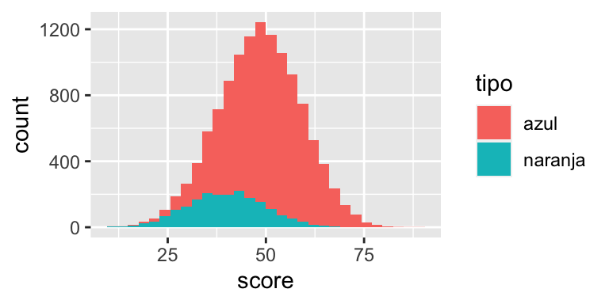
Se ajusta un modelo simple de regresión logística:
reg_log <- glm(paga ~ score + atr_1 + tipo, tbl_datos, family = "binomial")
tbl_datos <- tbl_datos %>% mutate(prob_pos = predict(reg_log, type = "response"))Las tasas reales de cumplimiento son iguales para los dos grupos. En primer lugar, se consid- era una estrategia donde se aplica el mismo punto de corte para todos los grupos:
resultado_cortes <- function(tbl_datos, cortes){
resultado <- tbl_datos %>%
mutate(recibe = ifelse(tipo == "azul", prob_pos > cortes[1], prob_pos > cortes[2]),
decision = ifelse(recibe, "Aceptado", "Rechazado"))
resultado %>% group_by(tipo, decision, paga) %>% count() %>%
ungroup()
}
resultados_conteo <- resultado_cortes(tbl_datos, c(0.6, 0.6))
resultados_conteo## # A tibble: 8 × 4
## tipo decision paga n
## <chr> <chr> <dbl> <int>
## 1 azul Aceptado 0 905
## 2 azul Aceptado 1 2400
## 3 azul Rechazado 0 4149
## 4 azul Rechazado 1 2546
## 5 naranja Aceptado 0 47
## 6 naranja Aceptado 1 101
## 7 naranja Rechazado 0 1353
## 8 naranja Rechazado 1 499resultados_conteo %>%
group_by(tipo, decision) %>%
summarise(n = sum(n)) %>%
mutate(total = sum(n)) %>%
mutate(prop = n / total) %>%
filter(decision == "Aceptado")## # A tibble: 2 × 5
## # Groups: tipo [2]
## tipo decision n total prop
## <chr> <chr> <int> <int> <dbl>
## 1 azul Aceptado 3305 10000 0.330
## 2 naranja Aceptado 148 2000 0.074Nótese que el grupo naranja ha recibido considerablemente menos aceptaciones que el gru- po azul, tanto en totalidad como en proporción. Más aún, con la precisión o tasa de verdader- os positivos es posible evaluar qué proporción de los que cumplirían si fueran aceptados fueron aceptados según el punto de corte:
resultados_conteo %>%
filter(paga == 1) %>%
group_by(tipo) %>%
mutate(tvp = n / sum(n)) %>%
filter(decision == "Aceptado")## # A tibble: 2 × 5
## # Groups: tipo [2]
## tipo decision paga n tvp
## <chr> <chr> <dbl> <int> <dbl>
## 1 azul Aceptado 1 2400 0.485
## 2 naranja Aceptado 1 101 0.168Y se ve que el grupo naranja también está en desventaja, pues entre los que cumplen hay menos decisiones de aceptación.
El siguiente paso es considerar la paridad demográfica. En este caso, se decide dar el mismo número de préstamos a cada grupo, dependiendo de su tamaño:
calcular_puntos_paridad <- function(tbl_datos, prop){
tbl_datos %>% group_by(tipo) %>%
summarise(corte = quantile(prob_pos, 1 - prop))
}
cortes_paridad_tbl <- calcular_puntos_paridad(tbl_datos, 0.45)
cortes_paridad_tbl## # A tibble: 2 × 2
## tipo corte
## <chr> <dbl>
## 1 azul 0.521
## 2 naranja 0.297El corte para azul es más exigente que para naranja. En sí, eso no es un problema, pero se observa:
cortes_paridad <- cortes_paridad_tbl %>% pull(corte)
resultados_conteo <- resultado_cortes(tbl_datos, cortes_paridad)
resultados_conteo %>%
filter(paga == 1) %>%
group_by(tipo) %>%
mutate(tvp = n / sum(n)) %>%
filter(decision == "Aceptado")## # A tibble: 2 × 5
## # Groups: tipo [2]
## tipo decision paga n tvp
## <chr> <chr> <dbl> <int> <dbl>
## 1 azul Aceptado 1 3094 0.626
## 2 naranja Aceptado 1 410 0.683Y así que además de ser más exigente con el grupo azul, a los que cumplen del grupo azul también se les otorgan menos decisiones de aceptación. Además, se aceptan considerablemente menos personas de la población.
La solución de igualdad de oportunidad es cortar de forma que la tasa de aceptación dentro del grupo de los que pagan sea similar para ambas poblaciones, lo que ocurre aproximadamente en 0.35:
calcular_cortes_oportunidad <- function(tbl_datos, prop){
tbl_datos %>%
filter(paga==1) %>%
group_by(tipo) %>%
mutate(rank_p = rank(prob_pos) / length(prob_pos) ) %>%
filter(rank_p < prop) %>%
top_n(1, rank_p) %>%
select(tipo, corte = prob_pos)
}
cortes_op <- calcular_cortes_oportunidad(tbl_datos, 0.35)
resultados_conteo <- resultado_cortes(tbl_datos, cortes_op %>% pull(corte))
resultados_conteo %>%
filter(paga == 1) %>%
group_by(tipo) %>%
mutate(tvp = n / sum(n)) %>%
filter(decision == "Aceptado")## # A tibble: 2 × 5
## # Groups: tipo [2]
## tipo decision paga n tvp
## <chr> <chr> <dbl> <int> <dbl>
## 1 azul Aceptado 1 3215 0.650
## 2 naranja Aceptado 1 391 0.652Nota: es importante notar que si la variable de resultado positivo es injustamente asignada, entonces este método no resuelve el problema. En este caso es relevante entender cuáles son los criterios con los que se considera un resultado exitoso dependiendo del grupo del atributo protegido (por ejemplo, si a un segmento particular se le permite mayores atrasos en los pagos y a otro menos, o un grupo se considera un delincuente reincidente por una ofensa mucho menor que otros grupos).
Rendición de cuentas
Interpretabilidad
Se pueden usar medidas como importancia de permutaciones para examinar modelos. En este ejemplo, se regresa al ejercicio de predicción de aceptación de solicitudes de crédito y se considera la importancia basada en permutaciones (Molnar 2019):
set.seed(823)
credito_split <- initial_split(credito)
entrena <- training(credito_split)
prueba <- testing(credito_split)
# preparacion de datos
credito_receta <- recipe(card ~ ., credito) %>%
step_normalize(all_numeric()) %>%
step_dummy(all_nominal(), -card)
# modelo
modelo_regularizado <-
logistic_reg(penalty = 1) %>%
# set_engine("keras", epochs = 500, verbose = FALSE) %>%
set_mode("classification") # ajustar parametros de preprocesamiento
receta_prep <- credito_receta %>% prep(entrena)
# preprocesar datos
entrena_prep <- bake(receta_prep, entrena)
prueba_prep <- bake(receta_prep, prueba)
# ajustar modelo
ajuste <- modelo_regularizado %>%
fit(card~ gasto + dependientes + ingreso + edad + propietario_si, data = entrena_prep)library(iml)
modelo <- ajuste$fit
entrena_x <- entrena_prep %>% dplyr::select(gasto, dependientes, ingreso, edad, propietario_si)
predictor <- Predictor$new(modelo, data = entrena_x, y = ifelse(entrena_prep$card == "yes",2,1) ,
type = "prob")
imp <- FeatureImp$new(predictor, loss = "ce", compare = "difference")
plot(imp) + theme_minimal()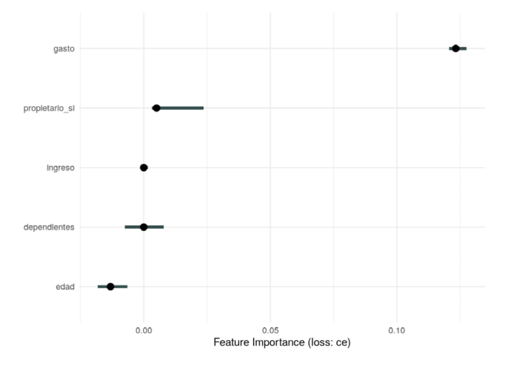
Se ve que, para esta red sin capas ocultas, la importancia se concentra en un solo predictor, gasto , que como se ve representa una fuga de información. Este diagnóstico es útil en general y, aunque no tan dramático como este ejemplo, puede señalar cuáles variables es importante considerar con cuidado.
Es primordial considerar también el efecto de variables asociadas a grupos protegidos y, de ser necesario, examinar con cuidado cómo afectan las predicciones.
Modelos parsimoniosos, que usan menos atributos, facilitan el análisis, el mantenimiento del flujo de datos y reducen la exposición a problemas de fugas o efectos indeseables.
Explicación de predicciones
Para explicar predicciones individuales pueden usarse los valores de Shapley (Molnar (2019)), (S. Lundberg and Lee (2017)). Estas gráficas indican la contribución asignada de cada atributo a una predicción individual, con la idea de considerar efectos marginales sobre la predicción dependiendo de la presencia o ausencia de otros atributos. Las contribuciones obtenidas suman la diferencia que hay entre la predicción particular y la predicción promedio.
Pueden examinarse también promedios a lo largo de grupos de interés.
Considérese el ejemplo de factores para detectar una enfermedad del corazón (Rossouw et al. 1983):
modelo_sa <- sa_boosted$fit
sa_entrena_x <- sa_entrena %>% dplyr::select(-enf_coronaria)
predict_fun <- function(object, newdata){
new_data_x = xgb.DMatrix(data.matrix(newdata), missing = NA)
results<-predict(modelo_sa, new_data_x)
return(results)
}
predictor <- Predictor$new(modelo_sa, data = sa_entrena_x, y = sa_entrena$chd ,
type = "prob", predict.function = predict_fun)
# el caso de interés es el caso 15
valores_shapley <- Shapley$new(predictor, x.interest = (sa_entrena_x[15, ]))
valores_shapley$plot() + theme_minimal()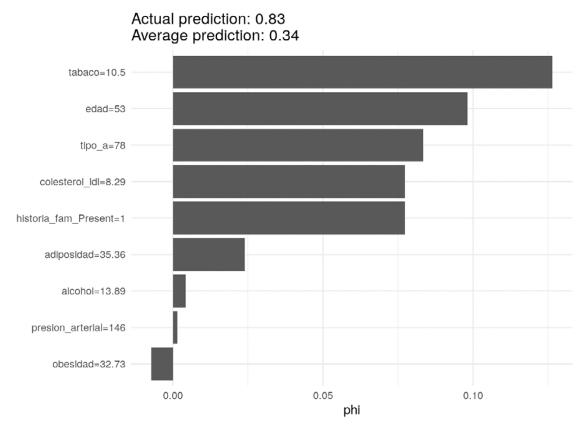
En este caso, varias medidas contribuyen positivamente a la probabilidad de enfermedad del corazón, como son uso de tabaco, edad y mediciones de colesterol. Estas contribuciones explican la probabilidad tan alta de este individuo particular.
En contraste, la siguiente persona está cerca del promedio, aumentando positivamente la probabilidad la edad y la medida de colesterol, pero negativamente el no uso de tabaco y ninguna historia familiar de diabetes:
# el caso de interés es el caso 24
valores_shapley <- Shapley$new(predictor, x.interest = (sa_entrena_x[24, ]))
valores_shapley$plot() + theme_minimal()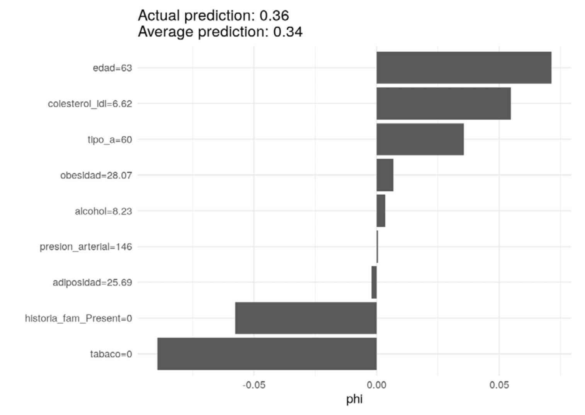
Observación: igual que en el modelo y en las gráficas de dependencia parcial que se dis - cutieron anteriormente, estos coeficientes no deben interpretarse de manera causal (por ejemplo: es necesario bajar el colesterol para estos dos individuos). Esta es la información que usa el modelo para construir la predicción a partir de la predicción promedio sobre la población.
Se pueden calcular los valores de Shapley para dos grupos de edad, por ejemplo.
Datos accesibles en http://archive.ics.uci.edu/ml/datasets/heart+Disease↩︎
Datos y más información accesible en http://www.liacs.nl/~putten/library/cc2000/data.html.↩︎